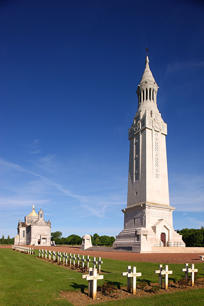
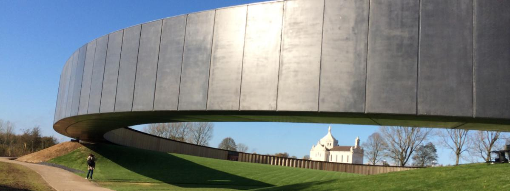

En octobre 1914, les troupes allemandes du Prince héritier Rupprecht de Bavière échouent à prendre Arras défendue par les hommes du général Barbot. Refoulées plus au nord, elles prennent pied sur la crête de Vimy et l’éperon de Lorette entre lesquels se situe la ville de Souchez traversée par la route Arras-Lens. De ces hauteurs, l’armée allemande tire un avantage stratégique majeur : le relief forme une barrière naturelle entre le Bassin Minier qu’elle occupe et les plaines d’Artois où les mouvements des armées alliées ne peuvent lui échapper.

Notre Dame de Lorette
Le 9 mai 1915, après six jours de bombardements préliminaires, l’armée française lance une vaste offensive contre ces positions allemandes sur les collines de l’Artois. Si les Français arrivent à reprendre le plateau de Lorette et Neuville-Saint-Vaast, ils échouent à s’emparer de la crête de Vimy où ils ne parviennent pas à consolider la percée des soldats de la Légion étrangère.
Après la guerre, l’État français entreprend l’aménagement de vastes nécropoles où chaque visiteur doit pouvoir prendre la mesure du sacrifice consenti par la Nation. À Ablain-Saint-Nazaire, sur le plateau où se trouvait avant-guerre une chapelle consacrée à Notre-Dame-de-Lorette, le petit cimetière créé après la bataille de mai 1915 par les soldats français sera choisi comme site pour l'aménagement d'une vaste nécropole, où seront accueillies les dépouilles en provenance de plus de 150 cimetières des fronts de l’Artois, de Flandre, de l’Yser et du littoral belge. 20.000 corps identifiés y recevront une sépulture individuelle et les restes de près de 22.000 inconnus seront regroupés dans 8 ossuaires. Lorette devient ainsi la plus grande nécropole nationale française.

Anneau De La Paix
Sous l’impulsion de Monseigneur Julien, Évêque d’Arras, est construite dans la nécropole une basilique de style néo-byzantin dessinée par l’architecte Louis-Marie Cordonnier. Face à elle, se dresse une tour-lanterne qui abrite l’un des ossuaires et dont le phare est visible à des kilomètres à la ronde.
Une Garde d’honneur, constituée de bénévoles, assure, depuis 1920, l’accueil des visiteurs et ranime, chaque dimanche, la flamme du souvenir.